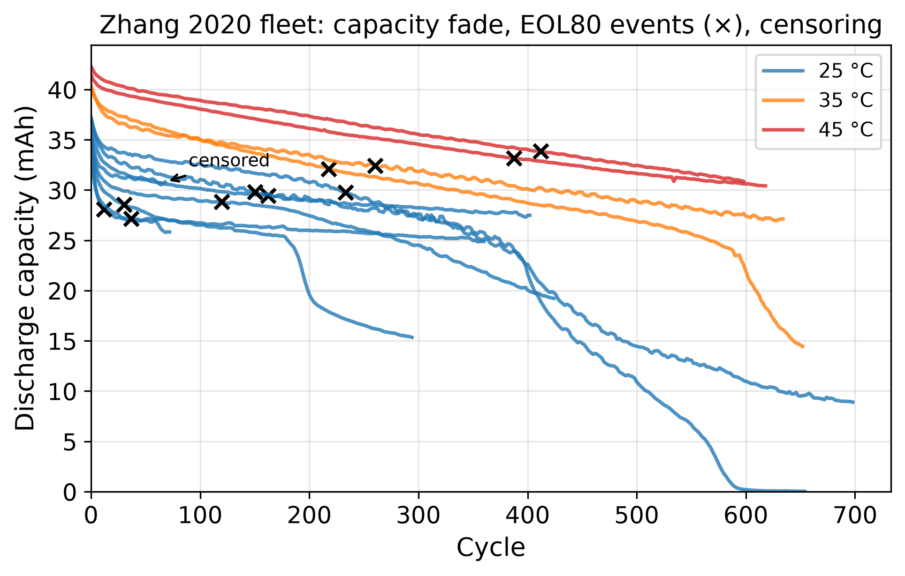
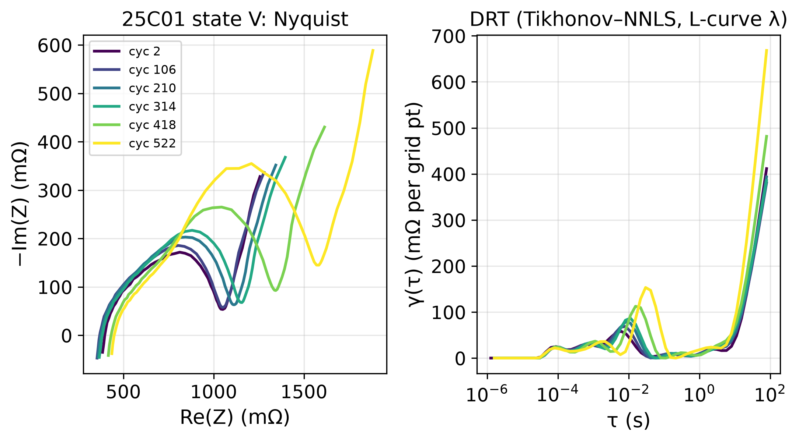
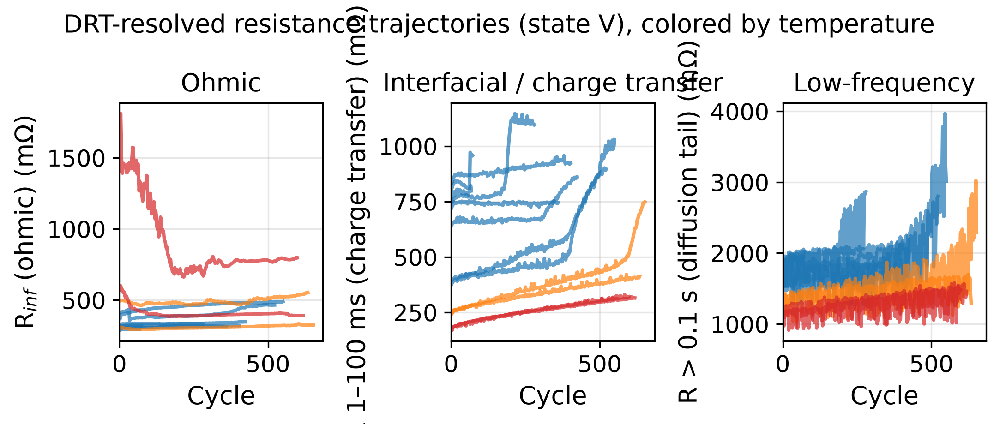
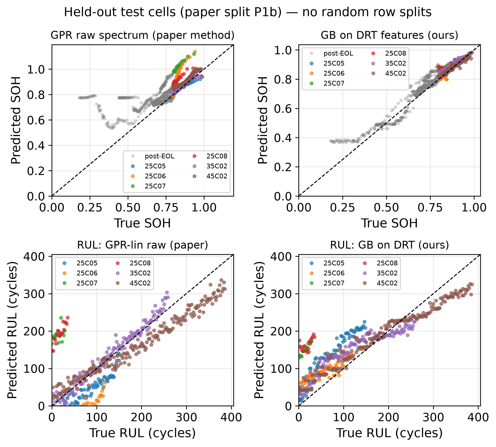
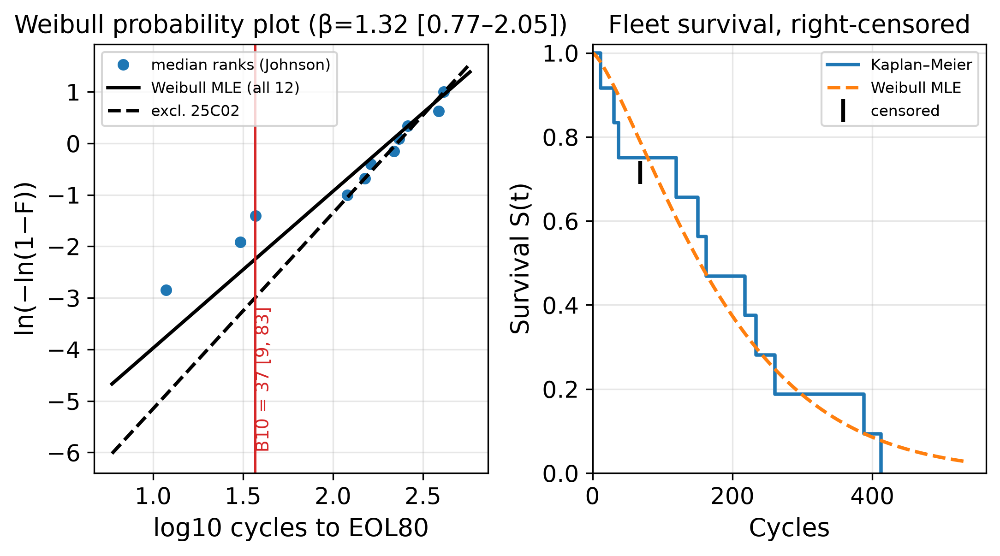
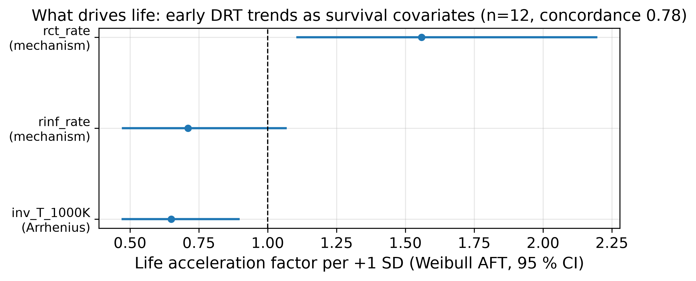

A mechanism-resolved battery-prognosis pipeline on the Zhang et al. 2020 coin-cell fleet: every impedance spectrum is deconvolved into physical relaxation processes (DRT), SOH and RUL models run on those named physics features under leakage-free cell-held-out protocols, and the whole fleet is wrapped in right-censored Weibull reliability statistics — the combination no published work on this dataset provides. Reproduction gaps are stated plainly, not hidden.
PUBLIC DATA Every figure and number on this page is computed on the openly licensed Zhang 2020 dataset — nothing here is my own laboratory data. HONEST GAP marks a place where my faithful re-implementation of the paper does not reproduce its published headline; I report the same-protocol baseline instead of the published number.
Twelve commercial coin cells cycled to end-of-life at three temperatures, with an EIS sweep logged in every cell state. Fully-charged rested spectra (the only state present and stationary for all 12 cells) feed every model — under-current states fail a DRT residual screen at 12–147% and are excluded, reproducing the dataset's own linear-time-invariance caveat.

A raw Nyquist spectrum is a tangle of overlapping processes. The distribution of relaxation times (Tikhonov-regularized, NNLS with an L-curve λ) separates it into peaks at physical time constants, and the resistance in each time band becomes a named, mechanistically-interpretable feature — the alternative to feeding a 120-dimensional raw spectrum to a black box.


Every split holds out whole cells — never random rows — so a model can't memorize a cell it will later be scored on. On SOH the gradient-boosted model on DRT features beats the paper's raw-spectrum Gaussian-process baseline by a wide margin and sits at parity with the best published leakage-free bar, using named physical features instead of a CNN.

| Model | Window | n | RMSE (% SOH) | R² |
|---|---|---|---|---|
| GPR, raw 120-dim spectrum (paper method) | pre-EOL | 490 | 6.06 | −0.80 |
| GPR, DRT features | pre-EOL | 490 | 5.06 | −0.26 |
| Gradient-boosted, DRT features (this work) | pre-EOL | 490 | 2.59 | 0.67 |
| Gradient-boosted, DRT features (this work) | all | 1289 | 4.08 | 0.92 |
Context: the published leakage-free bar on this dataset is ~2.88% RMSPE over the same six held-out cells (Ning et al. 2025, full-EIS CNN). The 2.59% pre-EOL pooled RMSE here is at parity or better, from named physical features — a metric caveat applies (RMSE on SOH vs RMSPE on capacity; same scale, not identical).
| Model | n | RMSE (cycles) | MAE (cycles) | R² |
|---|---|---|---|---|
| GPR linear, raw spectrum (paper method) | 490 | 62.8 | 44.9 | 0.62 |
| Gradient-boosted, DRT features (this work) | 490 | 55.8 | 44.4 | 0.70 |
The same lives, read as a reliability engineer would: a right-censored Weibull fit with B-lives and profile-likelihood confidence intervals, cross-validated across three independent MLE engines that agree to under 1%. This is the readout an OEM quality team actually asks for — not an R², but "what fraction has failed by cycle N, and how sure are we?"

| Fleet subset | n (events) | β (shape) | η (cycles) | B10 (cycles) | B50 (cycles) |
|---|---|---|---|---|---|
| All 12 cells | 12 (11) | 1.32 | 202.4 | 36.9 [8.6, 82.8] | 153.4 |
| Excl. 25C02 (infant mode) | 11 (10) | 1.65 | 226.9 | 58.1 [17.0, 113.5] | 181.7 |
| 25 °C subfleet | 8 (7) | 1.35 | 122.3 | 23.0 [3.3, 58.2] | 93.2 |
Every fit reported with and without the infant-mortality cell. Three-engine agreement (custom MLE / lifelines / reliability-pkg) is exact to 4 decimals on the all-cell fit. Small-n caveat: 12 cells, one chemistry, one duty cycle — the statistics are honest but narrow, with 35/45 °C at n=2 each.
A censored accelerated-failure-time model asks which measurable covariates move the whole life distribution. Putting DRT band-resistance rates inside a survival model is — to my knowledge — the first use of DRT features in a censored life model for batteries, and it points at a mechanism, not just a correlation.

| Covariate | Acceleration factor / +1 SD | Reading |
|---|---|---|
| Charge-transfer growth rate (DRT 1–100 ms) | 1.56 [1.11, 2.19] | the life-shortening covariate — early interfacial kinetics govern life |
| Temperature (Arrhenius, 1000/T) | 0.65 [0.47, 0.89] | inverse-Arrhenius: at 2C this fleet lives longer hot — kinetics-dominated, not classic thermal aging |
| High-frequency resistance rate | 0.71 [0.47, 1.07] | not significant (CI spans 1) |
Mechanism-AFT concordance 0.776; the top permutation-importance SOH feature is the same charge-transfer band (d_r_band_10_100ms). The story is internally consistent: the process that shows up as the most important SOH predictor is also the one that shortens life in the survival model.
| Finding | Evidence |
|---|---|
| Fade is not ohmic. | IR-corrected capacity moves EOL80 by <1 cycle on every cell; ohmic share of fade at end-of-life is 0.1–0.3%. |
| No abrupt interfacial onset. | A 10σ knee criterion fires on 0/6 cells — IR-corrected fade is gradual; the criterion was kept faithful, not retuned to force a knee. |
| Stationarity screen for free. | The DRT fit residual flags every under-current state (12–147% median residual) while rested spectra fit at <2% — reproducing the dataset's published finding that only rested spectra are trustworthy. |
So what? Physics-named DRT features match the best published accuracy under leakage-free protocols — and then do what no prior work on this dataset did: enter a censored survival model to give a fleet B10 with confidence intervals. That is the gap between a number and a decision — every feature maps to a mechanism a failure-analysis team can act on, and the one place the paper's result would not reproduce is stated openly, not buried. It shows the method survives the move from lab-grown data to a third-party, downloadable benchmark.
Future work: run the DRT-feature survival model online, updating remaining-life and its confidence band as each new impedance sweep streams in.